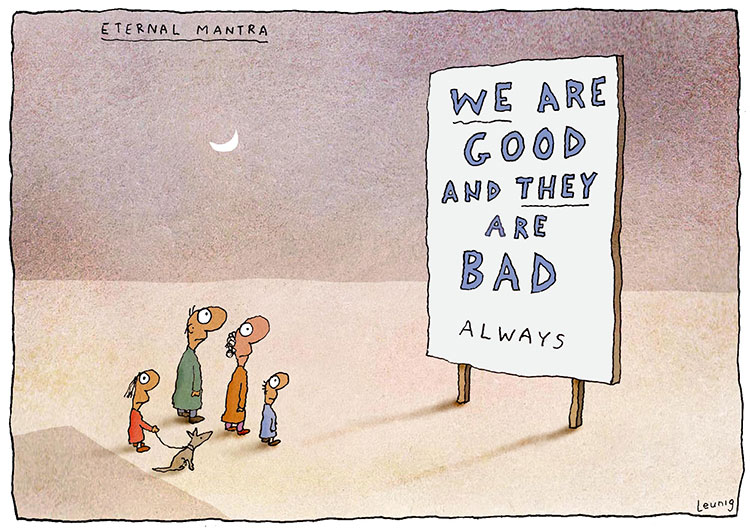

Lockdowns, border closures, masks, apps and eradication. Where do you stand?
One can’t sensibly address any of these issues without knowing more about context. But we don’t do context any more. Each of the issues is now its own little culture war within the larger culture war.
At the head of this queue is lockdown itself. One can reasonably argue that lockdowns generate more economic and human costs than benefits, including the deaths they cause. That’s not just in the countries locking down themselves, but also in low-income countries that trade with countries whose economies tank as a result of lockdowns.
I won't be that surprised if those opposing lockdowns in a principled way end up being right in hindsight. I am surprised that those who I respect and like – like Paul Frijters – don’t express themselves with more caution and humility, that they find it so hard to believe that they might be wrong.
After all, it’s almost impossible to specify the counterfactual – to say what would happen without lockdowns. That’s because so much of the economic impact comes from people locking themselves down, rather governments requiring it. But that’s a separate matter. They are at least doing us a service in arguing the case (if not in the way they sometimes argue it).
Even here, however, I think it’s a great pity they argue their case in such high blown terms – as defenders of liberty. I won’t go into the detail I’d like to here, but to cut to the chase, one is at liberty to do things that don’t harm others, and during a pandemic one’s social distancing is precisely and predominantly in order to minimise harm to others. Would lockdowns be an offence to liberty if the virus killed ten or twenty per cent of the people it infected?
Wider considerations matter because, with lockdowns being as stupendously costly as they are, if one does them, it’s insane not to do them properly. Australia acted early and locked down effectively though as we know now, incompetence in Victoria’s hotel quarantine and protecting its health workers led to a second wave. As the culture wars began, the COVID yo-yo was born. Fortunately, the Victorian Government stuck to its guns and was conservative in scaling down the lockdown as business ramped up the vitriol.
The population of Britain, Europe and the US weren’t so lucky, as lockdowns were imposed late, reluctantly and often ended too soon.
Similar culture wars rather than careful thinking are replicated endlessly.
Masks
Initially, almost all governments around the world followed the World Health Organisation’s catastrophic advice against facemasks. This continued until it became unviable – which it did for the Victorian Government in its second wave. Having eschewed mandated masks even on public transport, the Victorian Government then went all in and mandated mask-wearing in deserted parks.
Meanwhile, elsewhere in Australia masks aren’t required even in high-risk situations. NSW’s Premier begs citizens to wear masks on public transport but doesn’t mandate it. This pattern is repeated again and again. Masks are made into a civil liberties issue, rather than a temporary public health safety measure.
That useless app
Google and Apple have good technology for tracing contacts whilst protecting privacy. Instead, the Federal Government spends millions on an energy-hungry but useless app. They then make it voluntary. We should use Apple and Google technology and mandate strict privacy protections including deletion of all data after say 45 days as a requirement of taking public transport or eating in a restaurant.
Instead, in the midst of an emergency that brought on devastation to our lives and our economy, it’s political business as usual on privacy. Meanwhile, we give our data away for half a cent in the dollar to Fly-Buys or to Facebook to chat with our friends.
State borders
Movement across state borders has been marked by the same kind of binary thinking. Lockdowns have been imposed by every state and federal government at great cost. But with the second wave in full swing in Victoria, the PM pled for open state borders in the name of federation and the economy. Yet to open to an infected state would be to put all the costs of the previous lockdown at naught. Still, this is no more absurd than the equal and opposite response of State Governments since, which has been to close their borders to other states even when they have similar COVID spreads to themselves.
Still, after all this, I still think the British scheme “Eat out to help out” which was a 50 per cent subsidy for eating out deserves some kind of award. Is it the most obviously stupid government program ever devised? Predictably, it is responsible for a substantial proportion of Britain’s COVID caseload today. I wonder if they’ve considered “Mud-wrestling to help out”, or “Group Sex and Sauna to help out”?
But Eat out to help out pales into insignificance against Britain’s latest lockdown, announced amid much gnashing of culture warrior teeth, and complete with a hoped-for duration that is obviously too short for it to be effective. The worst of all worlds. Here we go again.
The vitriol and specious arguments on both sides of the lockdown debate have deeply disappointed me, especially from those people I respect greatly. What has gone wrong with our political and intellectual debate? Locking down or not locking down and the best timing for locking down, and the best types of lock down at different time points, is an extraordinarily complex set of decisions. It is not possible to have the right information about the impact of different types of lockdowns across all the different domains of wellbeing so as to be able to make optimal decisions. And yet decisions still have to be made. I think we should have a lot more tolerance of the mistakes our decision makers will inevitably make in these circumstances. At the same time we should press our decision makers to learn from mistakes made. Part of this is being much more transparent about the information that governments hold. And Australian governments, despite their good performance, have not been nearly transparent enough. If they had been more transparent we might have done even better.
Nick,
Its not a lack of humility to speak out against destruction when one sincerely believes it is unnecessary. Rather, I'd say its a moral duty. Who will speak out when your life gets destroyed next? Are you really suggesting that when someone shoots you point blank I should not speak out and say you have been murdered because I could not say with 100% certainty that you wouldnt have been run over by a car if you hadnt been shot? That's what you seem to be suggesting with your counterfactual stuff: I cannot name the hurt directly coming from policy because, who knows, something else might have also hurt?
Humility seems in short supply in your piece above.
"catastrophic advice against facemasks" sounds like you are totally convinced facemasks make sense. I don't think studies support facemasks, nor do I actually think it likely they help. They have been aptly described as garden gates trying to stop mosquitos. I suspect they are on balance a health hazard given how most people keep reusing them, putting them in their pockets, effectively turning them into pathogen dispensers.
"Masks are made into a civil liberties issue" sounds like you poo-poo those who think it indeed is a civil liberty issue. I dislike masks but are not super-bothered by them, but I do see the point when others say covering the face takes away their individuality and their means of communicating with others. It is depersonalising to be forced to cover up because it does diminish our humanity. You might argue they are not a huge civil liberty issue, but it doesnt sound very humble to me to dismiss that civil liberties are involved.
"Would lockdowns be an offence to liberty if the virus killed ten or twenty per cent of the people it infected?" What a strange question. Of course lockdowns would be an offence to liberty no matter what the death rates. The question is only whether that loss of liberty is worth it. Its not, btw, low or high death rates that make it ok to lockdown though, but whether lockdowns prevent any deaths. If it prevents a huge amount of deaths, then offences to liberties are more acceptable. Proportionality matters.
Etc. The post above is anything but humble. We are really just living in totally different realities. I am seeing huge amounts of hurt and damage around me that is killing tens of millions around the world and when I say something about that, pointing to statistics and studies, you tell me I am not being humble. I think the exact opposite: I feel I am letting the victims down by not being far more strident. I have to bite my tongue at every turn when I see friends shrugging their shoulders at another large group of victims whose lives have been destroyed, dismissing their hurt and indignation by saying there are such good reasons for their loss.
I was waiting for the counter factual and it never came BUT Paul imitates Steve Kates and says Masks do not work. There is no evidence for them. Huh?
By the way herd immunity without a vaccine would never work in Australia.
too many legal obstacles not to mention people's behaviour.
But even then how long does a lockdown last three maybe four months and the people affected by the virus falls steeply and hospitals are in essence not affected.
No so with Herd immunity. It would take years and hospitals would be overrun.
1% of the population dying seems very proportional to me that is what you support!
Indeed we merely have to see the USA or the UK to see the anguish of people who are living with governments who are incompetemt.
It is lives destroyed by the virus and that is only occuring in the short term.
I don't see this as a culture war. I see this as a debate between those who want to take a shot at quantifying the costs and benefits of various policy options (lockdowns, masks, border closures, etc.) and those who don't want to be bothered. It just so happens that many governments seem to be falling into the latter category, which is pretty shocking. If lockdowns are 'right', then let's have it rest on the basis of good policy analysis. And I don't think humility really matters.
Not sure anyone on this post cares about developing countries but I'm living in one and the combined consequence of lockdowns and border closures has caused a mass reverse urbanization process that probably has rarely occurred in history except in forced circumstances (e.g. the Khmer Rouge's depopulation of Cambodian cities in the 1970s). Massive unemployment, way beyond official numbers, is disguised by the emptying of major cities and the return of people to the countryside where they are basically doing nothing. I doubt many of the official macroeconomic indicators in any developing country are credible right now. The damage has just been colossal.
Thanks Paul
We've been over most of this before. I deplore your assumption that I and everyone else who thinks lockdowns may be the right thing to do are 'panicking'.
On 'liberty', it depends how you use the word. I'm using it in the sense that liberty describes the extent of one's permission to do what one wants providing it doesn't hurt others. My question on death rates may sound strange to you if you regard controls on your ability to start fires in public rubbish bins or throw your rubbish into your neighbour's yard as an infringement of your liberty. They are infringements on your liberty according to one definition, but not mine. Ditto, I don't regard constraints on people's acting in ways that can spread the virus as infringements of liberty.
But that doesn't mean they don't have costs to be compared with their benefits. I wasn't trying to win the argument with a particular way of using the word, so it's best to ignore the word and look through to the substance of what I was saying. If lockdowns, masks or anything else works, at some stage on some curve of lethality, I'm thinking you'd swing in favour of lockdown, or, as some call it 'panic' :)
Is that right?
why do you care so much whether I think you have panicked? Its not the worst of reasons, you know. I dont recall saying I thought you panicked, though I do recall thinking and saying you shouldnt be so afraid, leaving it up to you to say you were not afraid.
I agree with Michael: the humility thing is a red herring. You are not humble above, or in the previous posts when you were talking about Sweden and other places. You are full of opinions on what has been stupid and who has performed well, opinions I in many cases regard as unfounded, dismissive, and the opposite of humble. But I dont care about the humble bit because there is no point in navel gazing about humility as long as there is a modicum of politeness that allows people to exchange views.
I dont think you are uncaring and normally I would say you are much more gentle than I am, so why dont you spend the energy you now use agonising over whether I assume you have panicked for more weighty issues?
You have a very odd definition of liberty, btw. There are competing liberties involved in constraints, for sure, but to say "I don’t regard constraints on people’s acting in ways that can spread the virus as infringements of liberty" is a quite remarkable new definition.
Taiwan has done better than just about anywhere else, yet nobody shows much or even any curiosity as to the how what of Taiwan’s response. My guess is that it’s because ideology is much easier to understand-master than it is to master good design-engineering .
Nick's right, it is a culture war, between those who believe in an empirical approach and those who believe in an emotional approach. The empiricists can be on both sides of the lockdown issue, but the weight of the culture drowns out the empiricists by saying that trade-offs do not matter and that if only one life is lost to COVID that is one life too many. They are the ones with the ear of government, and they mouth senseless slogans like "health not wealth".
It is really just another iteration of the enlightenment struggling against the postmodern, between those who believe there is such a thing as the truth, and that even if it can't be exactly ascertained, the attempt is imperative, and those who believe we are all entilted to our own truths.
The "if even one life" argument eschews rationality and the understanding that there are always costs, even if these are only opportunity costs.
A sure sign of a culture war is when one side starts invoking "the science", rather than arguing from scientific principles. Given the variety of approaches around the world, and the propensity of political leaders to invoke "the science" it appears that either there are a multitude of different sciences, depending on your country, hemisphere and timezone, or that "the science" is not scientific at all.
Graham Young's post is the epitome of straw-mannery; point me to where one single person in authortiy has said "if only one life is lost to COVID that is one life too many". Governments in general have been all too aware of the awful tradeoffs involved, and most have spent a lot of time consulting with their economists and social scientists as well as their epidemiologists.
It is people like Paul who are simply denying the dilemma. In particular, he ignores REPEATED calls to explain how he constructs his counterfactual (ie what loss in WELLBYs - his personally preferred measure - would have occurred absent the lockdowns). Pointing out that the pandemic and the reaction to it has caused a massive loss of wellbeing does not of itself say anything about what loss we would have had with alternative courses of action.
As for style, Paul is I'm afraid one of those personalities that assumes those who disagree with him must be stupid or wicked or both. The upside is he is dead honest, the downside is that he sometimes has the social grace of a pit bull; he is a man who has suffered for both his faults and virtues.
Derrida Derider, re your very first sentence, Dan Andrews is a prime example of a politician who has been on the 'one life is too many' bus. He has used words to that effect quite frequently, as has the prime minister of New Zealand.
I don't see much evidence of consultation between governments and their economists and social scientists, certainly not before these lockdowns were put in place, or even now. Again using Victoria as an example, the situation there was articulated pretty clearly by Sanjeev Sabhlok a couple of months ago.
As for your last para, similar to comments made in the original post, you're putting personalities above arguments. I don't see what this has to do with what Paul Frijters (or anyone else) is like. This is not Facebook.
DD
Re Paul suppling a ‘counterfactual’ I don't accept your starting point .
You’r assuming that lockdowns , in themselves,actually make a longer term difference to the outcomes
Its clear by now that unless followed up with sustained very well done track test trace plus well run quarantine systems , lockdowns are worse than ineffective measures. In fact they probably increase the total damage all round.
A vicious circle of lockdowns, then brief easing and then yet more lockdowns (which is the reality in much of Europe for example)surely must maximise the lost WELLBYs all round.
Given that much of the west is seems utterly incapable of emulating nations like Taiwan , much of the advocacy for lockdowns in themselves alone as an beneficial measure seems to me to be either very confused -panicked (or possibly even in bad faith.)
Thanks Paul
But it's nothing personal and you misunderstand me if you take it that I think it is. At least from memory I’ve said this before.
I'm not objecting to you saying I'm panicking. There are oodles of people who seem to me to be eminently reasonable, who are doing their best. Norman Swan, Bill Bowtell, more epidemiologists than you can poke a stick at. They might easily be wrong, but saying they're panicking or part of a panic just muddles things up and brings emotions into it – your reading of their emotions. That's anathema in a discussion where you're trying to get at the truth.
As I don't tire of saying, about the only education I ever got was in history and what I learned was that outside of mathematics and sometimes even there, in an argument you often can't actually understand what someone is saying unless you can imagine reasons for them holding the views they do that relate to reality rather than their interests or their emotions.
On humility, as I've said, I expect you're right that I'm no model of humility, but I think you are not getting the hang of what I mean by it. As I recently quoted Iris Murdoch on the point, "humility is not a peculiar habit of self-effacement, rather like having an inaudible voice".
So I've expressed myself strongly. Perhaps wrongly too – so I'm all ears as to how. But the things on which I've leant in and expressed myself strongly are mostly conditional things. That is, I've said that if you lock down, as Adelaide now has, once you've got the virus under control, you'd be nuts not to close your border to places having a second wave. Just seems like simple logic to me. I've said that "Mud wrestling to help out" was a really stupid government program. Again that's got an internal logic to it – which stacks up at least with one study.
Perhaps I'm wrong about masks. I thought there was pretty robust scientific consensus that they worked. I've certainly seen summary papers by reputed scientists saying they work. They certainly work when applied properly in a medical context. But I haven't spent any time looking into it and don't intend to. I'm using my usual method of 'ground truthing' different arguments which seems to me to be the only practicable course of action. If you have any moderate and apparently unmotivated summary literature on it, I'd be interested to take a look at it.
On 'liberty' you're at liberty (as it were) to disagree with my use of the word, but do you think that rules preventing people throwing their rubbish onto their neighbour's property or factories belching pollution into the air reduce liberty? (Hint: I'd say they increase it.)
Thanks for dropping by and showing us what unemotional argument really looks like Graham ;)
Case in point: South Australia goes into full lockdown for at least 6 days, beginning tonight. Justifying this, the state's CHO, Nicola Spurrier, says (and I excerpt from her comments): ". . .the other characteristic of the cases we've seen so far is they have minimal symptoms and sometimes no symptoms but have been able to pass it to other people."
So this is what we have come to. A state in lockdown over a virus that the CHO says is mainly asymptomatic. It sets off such a panic that there are long lines outside supermarkets. The government then tells people not to panic-buy. But the government created the panic in the first place.
Am I the only one who sees the comical side of this?
I agree completely with that -- either that or its just ignorance or a lack of humility (how could those little Asian people do better than us...).
I thought it was a good idea. Basically, their testing has failed to keep up. You can't even necessarily get testing if you want too now. They even admitted they couldn't keep up with the tracing.
Given it looks like a serious super-spreader event, with more or less the same virus screwing Euroland up right now (which presumably would have similar if not worse damage in Aus given our age structure, obesity rates, etc., and our inability to keep it out of vulnerable groups) you are really only left with two possibilities. One is that you just wait and wait until you pull the plug, as seen now in Euroland in many countries. This is a clear case of what in reality happens politically. It is the the counter condition. This then become vastly expensive. The other is you do it early because the earlier you do it the cheaper it is. In this respect, if all it takes is 6 days of lockdown to get a hold of the problem and have life go back to normal, that's cheap.
totally agreed. There are deep tragi-comic aspects to all of this. One could make some wonderful Monti-Python skits out of it.
Just think:
"
A: How dare you tell me we panicked! The arrogance!
B: But you did, or at least many of you did.
A: No we didnt.
B: so why did you buy 5,000 rolls of toilet paper, 3 guns, disrupted your kids education, and locked away granny who is now dementing and whose cancer is no longer cared for, supposedly for her safety?
A: we followed the science. We did the best we could in a complex situation.
B: well, my science says you could have done much better and you really didnt need all that toilet paper or the guns.
A: yes we did. show me the counterfactual.
B: well, you could have done what they did in country C, or D. Or you could have done options 1 and 2 leading to the following predicted outcomes...
A: those are not counter-factuals.
....
"
Maybe the various sides should use more humour on each other. It might help us get what the other side sees and thinks.
Hi Paul, I'm thinking you don't totally agree with Conrad, but that this is a response to my response to you?
I was responding to Michael but Conrad's comment got in the way before it was on the site! And yes, I was poking a bit of fun at you, Homer, and Derrida wrt the counterfactual thing and the humility issue. But less so than your cartoon above pokes fun at me. Btw, if I were trying to poke fun at my position I wouldnt have put on that billboard "we are good, you are bad" but more something like "Will you stop being so stupid? For your own benefit, of course. No need to thank me."
Conrad, do I take it that you are fine locking down an entire state for a virus that the CHO says is mainly asymptomatic? And are you fine with the government panicking people to line up for 50 rolls of toilet paper? And then tell those same people they shouldn’t panic? That is not government, it is pure slapstick humor.
If you’re worried about it getting to the okd and the obese, then take proper steps to protect the old and the obese. Leave the rest of us alone.
Hi Nick,
I know how you say you see these things when challenged, but its not what you actually do.
So you say you make conditional statements like ïf you lock down, then the next bit also makes sense" but in your post above you just blankly say “catastrophic advice against facemasks”, which you then in your reply above qualify. I can link to 5 studies that say facemasks are, as they are used, useless, and of course we are all eagerly awaiting the big Danish study on this which is a randomised experiment and is having a tough time getting published.
You're having it a bit both ways by making both sweeping statements and then later saying something much more nuanced. Now, I dont mind so much because you are just making clear what you think. But its not humility as we know it to say "catastrophic advice".
On the garbage stuff, sure. Any infringement on what I do is a limit on my liberty, but that limit can benefit someone else's liberty. There are more important liberties than others, which we call basic liberties.
I dont really have much of an opinion on whether you panicked. You didnt loudly call for lockdowns when the virus first broke, which was the most damaging form of panic that I believe many people engaged in.
As to how to talk to other scientists, that is an important question. Basically journals and many scientists totally shut themselves off from what you might call the sceptical view (or which you might call the consensus view of pre-march 2020 which in a matter of weeks became the persona-non-grata view). The piece you invited by that Toby Phillips character was a good case in point of how little real engagement there was. I have heard of many economists who made calculations like mine (with similar conclusions) who have refrained for career reasons to even put them in working papers. That has been the reality for months, as the reaction to Gigi Foster may attest to. How does appropriate 'debate'with people who try to get you fired if you let on that you might not agree with them? Humility in the face of censorious repression? Or boldly making the argument as openly and best one can to at least signal to others with the same views that they are not alone and that there is a lot of work to be done?
I asked Leunig to redraw the cartoon, but he charged too much
So I panicked and just put it up the way it was ;)
For the record, it didn't even occur to me that the cartoon was a commentary about you. You're not a culture warrior. You're just a very naughty boy.
I'm with you Michael and have always held Conrad responsible for the run on toilet paper.
:-)
Conrad given the situation ,it seems to be very able to spread via small things like touching a surface, a 6 day shutdown seems ok . Hopefully that is enough time to get things working. Mind you going off reports this strain of the virus seems to have little in the way of serious impacts on those infected.
Main thing I take from all this is, WTF aren’t we swotting up like crazy on how Taiwan has handled quarantine?
Why are we paying so much attention to nations like the UK nations that have failed in just about every sense and so little to a democratic nation that has done so well?
Conrad also there is the case of : Japan 129 million people many of whom are very old , the virus is definitely active in Japan ,yet total deaths to date are less than 2,000. You’d think that there’d be interest in finding out more about Japan’s story , but no.
The good news is that you can now give that award to the NSW government with their $100 worth of vouchers scheme which closely emulates the British one. It will obviously have a completely different outcome because.... uh... um... well... it just will, all right.
Also, the advantage of half-arse measures is that all sides can claim that the results vindicate their position. "removing liberties doesn't stop the virus spreading" but at the same time "removing the lockdown early didn't save the economy" or whatever your particular angle on the issue is.
Not to mention all the "my approach was not implemented exactly and therefore no-one can prove it wouldn't work" (the argument from ignorance is not stronger because you're really, really ignorant).
I think they haven't got the genomic stuff back yet, but I think it is thought to be the same strain as in Euroland, which would be entirely unsurprising given they think the initial case was from the UK. The fact that some people didn't get sick (the older ones are in hospital) is unsurprising given many are presumably young (one of the likely super-spreaders was a casual worker in a Pizza shop..). I also think the initial family are also from India, and they may potentially have more baseline immunity than white Australians (generalising from the immigrant workers in Singapore).
I agree that all of the stories from Asia are worthwhile listening too and investigating. I find very surprising people don't care. For example, in Hong Kong, the first wave of coronavirus caused no reinfections with medical workers at all, but everywhere else it is a large part of the problem. So simple things that should be easy to learn by just asking people are not clearly not learnt.
+ 1
+ 1
Same in India, just on a even more massive scale.
Read a piece the other day about kids there being sold into de-facto slavery for 7 dollars to make the family survive a few more days. Happen to talk about it with a colleague from India ... she confirmed ...
+ 1
Although there is a number of pieces out there on Japan:
https://edition.cnn.com/2020/11/16/economy/asian-economies-japan-china-intl-hnk/index.html
https://www.policyforum.net/japans-pandemic-response/?fbclid=IwAR1zBXQ9HudA5s-pnrshdVtZnCSX0IjWCfNRiFraQLMzaLWIZwh1LLc3ujM
https://www.bloomberg.com/news/articles/2020-05-22/did-japan-just-beat-the-virus-without-lockdowns-or-mass-testing
https://medium.com/@shotamiz/how-japan-is-combating-sars-cov-2-covid-19-83b7dd8d3f9
Eat out to help out is certainly a shocker. Not least because I can't help but read it as a feminist riposte to lie back and think of England.
However, what I think is the most egregious example of culture wars impacting discussions on COVID goes to health professionals and others who insisted that the Black Lives Matter protests should still go ahead, even to the point that arguing the protests were in the interests of public health. I think that, more than anything else, undermined the credibility of all those arguing for lock-downs, masks, and other measures in the eyes of a significant section of the public.
Gentlemen and ladies, the Danish study is in. It apparently favours Paul's view, although I am relying on a second-hand account from the NYT, but given its general stance on these issues it is probably reliable on this matter. https://www.nytimes.com/2020/11/18/health/coronavirus-masks-denmark.htm
Graham,
what is Paul's view? Or to put it another way what is his counterfactual.
The only thing I can get is herd immunity.
Unfortunately it is impossible to implement in Australia for a host of legal reasons. not mention behavioral ones.
Even if you could implement it how long would it take? My uneducated guess is well lover two years.
the wellbys would take a battering, not to mention the economy
That does not take into account people can get the virus more than once although to be fair this is on very early results so cannot be taken fact as yet.
That does not favour Paul's view that masks are useless.
Thanks Graham
I couldn't get your link to work, but went to this link – which I hope works for others.
It said this:
This is broadly in line with my understanding. I am surprised that it doesn't protect the wearer, but the main pitch I'm aware of – exemplified in this video that a friend of mine was involved in bringing about – is that masks protect the other. Here he is on BBC TV making the point. He's quite specific that he's not recommending masks to protect the wearers, but to protect those around them.
There's a respectable argument, based on Mises and the socialist calculation problem, that we can't know that number. That's not an argument for or against 'lockdown' but for some humility among the critics, something generally wanting.
“ So simple things that should be easy to learn by just asking people are not clearly not learnt.” So true and ,so widespread.
Graham
There are culture war elements to it, but not entirely of the 'Freedom v Authority' variety. The certainty many proponents of 'freedom' have adopted (and with whom I'd normally associate myself) proceeds on an assumption that the economic (and social etc) costs aren't minimized by elimination. They may not be the and from what I can see, Nick allows for that. But it is, at least, plausible.
+ 1
There is a lot of simplifying nonsense written about this study by people who apparently never got to the results section ...
It certainly does not confirm that "Face masks don't work." as @sebrushworth has claimed.
Moz the UKs track test trace systems are only able to trace about 60 percent . They employed “teenagers “ to do the phone calls ( seriously). And the UK continued to allow os arrivals without quarantine. The situation in NSW is a tad different to that.
Moz a Melbourne style severe lockdown of say most of the UK for , say 120 days would be a ‘big project’ . Doing that ‘full arsed’ lockdown would be next to impossible in practice, so the question surely is : is a halfarsed lockdown worth it for the UK, at all?
+ 1
Graham
The study sound like it has serious limitations for example it relied on peoples memory. Most of the studies of the past ten years that I’ve been able to find ( and there aren’t that many .) have been of comparing different styles of masks in hospital style situations are probably not that applicable to being on say a bus.
One study that was of uni students in dormitories and probably more applicable to normal life did find that wearing masks reduced infections transmissions by a small but still significant amount, from memory about 5 percent, which in the context of say a hundred thousand people is a meaningful number.
I think you're being unnecessarily generous to the UK trace system after all the reports of randoms being hired, left untrained, then fired equally randomly.
I still don't think that saying "we have active community transmission but we're opening up anyway" is the correct approach. If nothing else, the current tracing system can't cope with thousands of cases per day, AFAIK they are still limited to about 3000 calls per day total... that's fine if each case has at most 10 contacts and there are only a few cases a day. But if it's one case with even 100 primary contacts things get ugly fast... and NSW has just announced a limit of 3000 people at NYE gatherings.
https://www.abc.net.au/news/2020-11-19/nsw-relaxes-coronavirus-rules-for-new-years-eve/12898856
As I said, anything half-arsed lets all sides claim that they're correct. And especially with BoZo and the Conservatives half-arsed is as good as it gets.
Questions about whether the UK should have just followed Fritjers approach were heavily discussed in the UK and the consensus was that even the people who voted for benefit cuts and kicking cripples out to die in the street wouldn't stand for that.
I imagine those people were already decided. From the opposite side, I imagine people could look at all the crazies who now turn up to the stop-the-lockdown type protests. They appear to be the vast majority in those protests, fight with the police, tell us how 5G is bad for us, how lizard people are controlling the world etc. . One might also assume that their opinion must be wrong because of this, not because of any real argument.
I personally thought the BLM movement could wait, especially in Australia (where black lives are clearly getting better). However, they did something useful, and showed that if everyone wears masks and keeps a reasonable distance, the virus wont spread quickly. Yet white people still sit around arguing over this, including here.
The headline for the NYT article on the Danish study about mask wearing illustrates the debate on this thread perfectly.
'A New Study Questions Whether Masks Protect Wearers. You Need to Wear Them Anyway'.
In other words, 'the 'science' says there is no evidence from this study that masks protect wearers, but YOU SHOULD WEAR THEM ANYWAY.'
So why should you wear the masks anyway. Because most of the scientists/medical people this journalist talked to said you should wear masks, even though they didn't have the double-blind scientific evidence to justify this.
This is not following scientific evidence. It is following expert judgement (with the experts in this particular case being defined by the journalist). And there is a case for following consensus expert judgement when the scientific evidence is not entirely clear, but it should be described as such. It should not be said we are recommending/mandating the wearing of masks because of 'the science'. When we put it that way we are getting into religious/cultural war territory.
Imagine if everything needed a double-blind placebo control study in every condition. Even the tiniest study would cost a million dollars. We would get nowhere.
Also, maybe you didn't read that heading well, but they are looking at protecting the wearer and it's just a single study. If you want stop covid, obviously spreading to others is a big deal. In white guy countries, where people don't seem to understand this as well as Asian countries, the main effect it appears to have is to force governments to introduce harsh lockdowns at massive expensive.
Moz
Just about everything in the UK that could be done wrong was done wrong.
So
The UKs deaths per million by now is around 780, plus there has been a quite big unexplained rise in deaths at home from other causes . In Germany the figure is around 160. Swedens per capita per capita figure is 624.
( Belgium seems one the worse in the world at around 1200 per million).
If a nation cannot for whatever reasons do all that must be done to do X properly, then is it wise for them to base their strategy on a half baked version of X?
Somethings can’t be done by halves .
Moz the situation in the UK and also in Victoria is clearly the result of decades of poor management and choices.
In particular creating the combination of inadequate funding with a very centralised yet at same time, chaotically managed system takes years to perfect.
We now have three people on this thread alone arguing about the Danish study of masks.
Now perhaps there's more to know, but the NYT report of it says that the study "did not contradict growing evidence that masks can prevent transmission of the virus from wearer to others". This is the principal ground on which people have argued for mask-wearing. The quote comes from the second paragraph of the report in the NYT that Graham linked to.
But the two who've commented so far since that article was published claim it as a vindication for mask-scepticism.
Srsly, where's your self-respect guys?
Its Q.E.D. for the title of the article.
I think another reader mentioned the states of North and South Dakota as possible candidates for being a substitute for the “missing counterfactual.” This looks appropriate as the Governor of South Dakota acted to minimise actions to stop the viruses spreading .They had no lockdowns and allowed all businesses to operate as usual and encouraged mass gatherings which have acted as superspreader events.
Clearly it is a culture war. Look at the US. Look at Sky after Dark versus the Guardian. It need not have been so and could easily have been the reverse since economic catastrophe tends to hurt the most vulnerable.
When Pollies talks about the science, they mean their hand appointed epidemiologists who report simulations based on best guesses for critical parameters. This is not science at all, as I think you are pointing out.
Only if there is no vaccine. If an effective vaccine emerges, then lockdown does indeed change the health outcome.
The difficulty early on is that it was impossible to estimate the chance of a vaccine. The chance now seems high, and so I think the case for further lockdowns if the disease starts getting out of control again is strong.
yes, very true. I have used the South Dakota policies in various presentations and papers on the subject as a counterfactual (though I prefer to use Tanzania because of their papaya stunt: they used the PCR test to say a papaya had covid). I dont know too much about South Dakota apart from their covid-policies. Their governor has been saying for months pretty much what I think too. In the period up till Oktober they had almost no cases so were looking good on any stats, but off late they have gotten a big covid-wave that has quickly brought them up to the US average of 770 deaths per million. Looking at their trajectory (https://www.worldometers.info/coronavirus/usa/south-dakota/), the covid death rates are going to climb for South Dakota up to, I would guess, between 0.1% and 0.2%. Around 0.15% seems to be the ballpark figure for North America for the mortality rate before this version of the virus peters out. In maths, the 0.15% is IFR*(R0/(1-R0)) where R0 is the long-run replication rate with pre 2020 levels of interaction. It will be a bit higher in the very dense urban areas (NY), a bit lower in the more spread out places. It depends on a lot of factors, but in terms of mortality we are seeing the numbers I have been using since March (I said 0.2% mortality if the whole population is exposed). Europe at current trajectory is heading towards something like 0.1%-0.15% reported covid deaths before this winter is done. It will make the vaccine issue politically difficult because you will get a lot of medics claiming that their countries already have a large degree of herd immunity, so why should they take the risk of a vaccine. However, those debates are months away from the mainstream media (just as only these weeks the NYT really woke up to the issue of T-cell immunity which medics and troppo have been talking about since May). I am glad to see in the above everybody sees the Danish mask study as important evidence. That's common ground. The big number in that study I see is that among the 3000 danes that wore masks in April-May, 42 got covid, whilst among the 3000 that did not, 53 got covid. Its a statistically insignificant difference, but at least does means mask wearing surely doesnt make it worse for the wearer. The study doesnt say much about how non-mask wearers are protected by mask-wearers, nor a host of other issues, buts its about as good as it gets on whether masks protect wearers in urban environments.
Thanks Paul,
So what's your view of the NYT reporter's claim that
1) there's "growing evidence that masks can prevent transmission of the virus from wearer to others and
2) that the study didn't contradict that evidence?
"It will be a bit higher in the very dense urban areas (NY)"
In case you have forgotten, your claim from the first wave was that that area already had herd immunity -- indeed, if I remember correctly, one area had 44% (or similar) of it's population with antibodies, which according to your T-cell hypothesis (4* antibodies) meant they should have well over 100% protection. The same should have been true for Madrid (the worst place in Spain now) and places in Italy getting it again and now other places too. I don't doubt T-cells are important, but one might wonder why you wouldn't revise your hypothesis given the data.
"It will make the vaccine issue politically difficult because you will get a lot of medics claiming that their countries already have a large degree of herd immunity, so why should they take the risk of a vaccine"
Seems unlikely, especially because the chance you can get covid more than once is very large and it is not yet clear how much of a reduction in symptoms you get the second time you get it (especially if there are mutations which can be updated in vaccines) or how long it will be before getting it again becomes prevalent. Presumably if you just let people get it as they wanted, you would get a pretty high take up -- indeed influenza vaccines are pretty popular, and since influenza doesn't kill you unless you are especially unhealthy to start with, I don't see why Covid vaccines wouldn't also be popular. I'm personally happy to pay $20 for a vaccine that means I won't be sick for two weeks once every three years. I can hardly think of a better investment, and the chance I'll die of influenza is about zero.
correction, that should be IFR*((R0-1)/R0)
Conrad, Nicholas. Its the moralistic nature of the NYT headline I object to. A better 'headline' would be. 'New study provides no evidence that masks protect wearers. Experts will use this data along with other data about whether masks protect wearers and whether they protect non wearers to refine their guidelines as to when it is advisable to wear masks'. The NYT gets moralistic when it says 'You need to wear them anyway'.
The debates about COVID have become unhelpfully polarised. When an article like the Danish mask study comes out, one side comes out to try and discredit it or say its irrelevant, and the other side says this proves conclusively that my position is right.
I don't have a view on the best evidence based approach to the wearing of masks as I haven't deeply reviewed the literature. But I do know that most of the arguments put about the wearing of masks derive from tribal positions rather than being about the scientific evidence we have on it. And that is a problem for an informed public debate.
That I think is the original point you were making Nick in your article, and which you encapsulated by the Leunig cartoon. But then you rather spoiled your point by launching into somewhat dogmatic statements about the control of COVID which in some cases were based on evidence, but in other cases were tribal positions.
Hi Conrad,
yes, I did think New York had to be close to herd immunity after their first wave, which gave them a mortality rate in the state of 0.17%. The second wave seems to support that assessment: the second wave of death is puny compared to the first one. I pay little attention to the supposed wave of 'cases' because the test regimes have changed beyond measure (far more testing now and in different parts of the population). It was clear from the serology tests that the PCR tests had only picked up a tiny fraction of the infected, meaning that tiny changes in test regimes can lead to huge changes in reported cases. From my point of view the current panic is NY is a form of self-harm.
The issue of multiple infections is of course an empirical issue. More and more studies suggest long-run protection from an infection. The number of recorded double infections thus remains tiny (single digits whilst the WHO believes close to a billion have been infected). Just not likely to be an issue. New evidence can change that assessment of course, but it really is not looking likely at all.
The more important issue will be mutations and displacement. Maybe covid will replace the other respiratory diseases and we'll see new variants coming up seasonally. It will make it easy for everyone to claim they were right ("my IFR was for the initial strain" vs "my IFR was for all members of the new family of covid"), but in terms of population health we're just back to where we were in 1980-now with covid instead of flu: seasonal peaks, half-effective vaccinations. Flu was worse for young people, this one is worse for older people.
on 2) I agree: the Danish study does not have much to say on whether masks protect others, so it doesnt contradict other studies, at least not strongly. It does have some odd little findings in it that one could spin in that direction, like that the mask wearers reported having more family wearers with covid (which is very odd but maybe merely means masks made them more observant of their family and made them push their family to have more tests, ie no real effect). You could spin that sub-finding to say the masks didnt prevent the other family members from getting it, but since almost surely something left-field is going on, we just really dont know how to read that sub-finding. I put very little weight on that sub-finding. Its really hard to study the secondary effect well.
On 1), show me the evidence. The problem with many claimed 'definitive studies' is that they are mainly based on lab-tests which are, unfortunately, not very informative about masks in wide usage. Many in the populations dont wear them 'properly', dont use a new one every few hours, dont wear gloves and so dont refrain from touching their masks with their hands, etc. One has to study this in the wild, particularly because we do know from very simple studies that with many people these masks start to have an awful lot of pathogens on them (people use them for days, sometimes months), so their pathogen properties will be very different to lab-tested ones. Maybe I missed it, so do tell me of the one you found convincing.
Its not easy to design a convincing real world study, but I'd settle for seeing variation over time in regions with compulsory versus on-compulsory masks. If you look at graphs of cases from countries and are asked to guess when they introduced masks, you'd be hard put to guess right. But I see it as an empirical issue so am open to persuasion.
The length of duration of protective immunity post infection is yet to be established. Cross immunity from other Corona viruses looks to have been accepted as present but whether it ameliorates or stops infection is not clear. The low incidence of repeat infections looks promising at this time but this may increase as immunity declines into the future. Long Covid is a reality and the persistence of more specific organ abnormalities rather than the general malaise is another poorly quantified element in this disease. It is this plethora of unknowns that should be considered at all times. I had mentioned most of this concerns previously but these are technical and marginalised concerns for those whose focus is returning economies to “ normal”. This is how politics prioritises some concerns and discounts others, often without sufficient consideration of the long term nature of health problems , I’m not sure why other than that they seem complicated and inconvenient. With vaccines soon being available and at this point it looks like more than 10 could be available severe adverse reactions in those who have had infections is still a worry. I think this is a reasonable concern and until such safety is confirmed it is likely many of this cohort in severely affected countries will be reluctant to have one.
Let's say you had a drug where there was a reasonable consensus that it successfully treated hepatitis and some people were claiming that it also cured cancer and a study was done that didn't confirm that it cured cancer. Would you then expect the headline to say "No evidence of drug curing cancer so drug is useless"?
Nicholas
“ So, what were the results?
We’ll start with the intention-to-treat analysis. In the face mask group, 1,8% developed covid-19 over the course of the study. In the control group, 2,1% developed covid-19. That is a 0,3% difference in favor of face masks, but it is not even close to being statistically significant.
Ok, let’s look instead at the per-protocol analysis, which in practice means that the 7% of participants who often didn’t follow the mask wearing instructions properly are excluded from the analysis. In the face mask group, 1,8% developed covid-19, and in the control group, 2,1% developed covid-19. So, interestingly, the result was the same regardless of whether you look only at those who wore the masks as intended, or look at everyone, including those who didn’t follow the instructions. This in itself suggests that mask wearing doesn’t make a big difference, since the results don’t change when you only look at people who have been good at wearing their masks as intended.
As an interesting aside, the researchers didn’t just look at covid, they also looked at 11 other respiratory viruses. In the face mask group, 0,5% tested positive for one or more other respiratory viruses. In the control group, 0,6% tested positive. That is a 0,1% difference, and again, it was nowhere close to being statistically significant.”
Not sure how in the real world you’d actually test “do masks protect other people.” Any ideas?
However if masks don’t prevent the virus getting in to you , what’s the odds that they can nonetheless prevent the virus getting out of you ?
+ 1
Statschat on the danish study.
I'm not sure if you're responding to my post Nick, but if you are, I would certainly oppose the 'so drug is useless' part of the headline you put forward. The point of my post, which may not have been expressed clearly, was that for productive scientific and public debate we (on both sides) need to avoid emotive and moralistic statements. Language is important. Its the 'you need to wear them anyway' in the NYT headline that gets my back up. I'd be happy with 'A New Study Questions Whether Masks Protect Wearers. But This Doesn't Change Current Recommendations About Mask Wearing'
We do know masks protect other people because those airborne particles are trapped.
That is the theory anyway and it is hard to argue.
They are good if there are a lot of people who have the virus but show no symptoms.
I flew out of Perth, the capital city of Western Australia, in November last year and returned two weeks ago after 12 months uninterrupted in the outback. It was a shock. Virgin flights land at Perth International Airport. Our 737 used a secondary, minimalist terminal. I walked across to the main building and it was a scene from one of those movies about the end of the world. Not a soul, not even a security guard
A walk along the length of the central city from William Street to Cathedral Square up Hay Street and back along Murray Street was depressing for the number of shut-down shops although this is not entirely due to Covid 19. If people shop on-line, shops will close and cities will lose their life. Yet property developers build more shopping precincts.
I don't think this is a culture war. It is a genuine debate based on divergent views. What bothers me is the lack of consensus on what the thing is and where it comes from, which seems odd now that we are into the second year. The vaccine manufacturers' claims sound wildly optimistic. I don't see how they can have any idea about side effects at this early stage and I hope there is no talk of pumping the stuff into kids. For folks of my age it may be comparatively harmless, although I would not touch it myself.
Re Masks its pretty counter-intuitive that if medical grade and worn properly that they would not have at least some benefit.
Narrow focus on Masks or lock downs or whatever single issue is unhelpful.
Its clear that a successful approach to the problem involves meticulously integrating a large range of components : initial quick suppression, followed by sustained well done test track and trace, paid sick leave- no need to have a second job- ,community measures i.e. hand-washing, masks , well run quarantine , best practice viz aged care ( there must be more but it will do as a starter).
If you can't or won't do all of the above its really just an argument between the merits of 'let it rip, quickly' vs 'let it rip, slowly' .
Jerry
its a bit of a caricature but, advocates of the 'mandated' approach argue that the damage you describe would be much the same under a 'voluntary measures' approach. So it can be effectively discounted as part of the calculation.
However when its pointed out that Sweden's per-capita deaths is less than other many European nations and the economic costs to Sweden of their measures whilst pretty high are much less than the estimates for say Spain and France, the response is 'its too early, it will change' yet its getting on towards most of a whole year since this whole biz started .
And the lack of curiosity about how Taiwan and much of east asia has handled it gets more startling by the day.
That's kind of the weak version of what I am saying. The strong version is that if you are going to be scientific about something then you will cite evidence and effects, and put in indicators of certainty. Generally people who say "the science" are using a rhetorical device to shut down debate. They'll often go on to describe someone with a different position, even if it is based on the same data, or evidence as "anti-science".
Agreed
China is the elephant in the room here. Compare economic growth/contraction with the US over the period of the pandemic, and you will have a roughly quantifiable answer to which approach, the strongly regulated or the weakly regulated, has done the most damage to the economic system. I've seen some figures but forgotten where they were. The strongly regulated, go early, go hard approach needs people who are amenable to it, who trust the government. It won't work where enough people don't trust the government. Trump was probably right not to bother with intrusive regulation until people clamour for it, even if that approach is vastly less effective for public health, and probably economically. That is what we have come to understand as democracy.
I doubt most Chinese citizens trust the government. A big stick doesn't equate to trust, it equates to fear. China may well have the most reasonable outcome for this particular thing (we'll see), but (a) the reason it escaped China and screwed up everyone else was because of the political system (i.e., people afraid to say anything) -- it's not like China is so poor or malfunctioning that they couldn't have stopped it if people wern't too scared to get their heads cut off for speaking out; and (b) they have worse outcomes for essentially everything else compared to well functioning liberal democracies. So if a win here equals a loss on everything else, it's an overall loss.
Also, pointing to the US failure doesn't mean Australia, New Zealand, Taiwan etc. were failures. Some places functioned well without the threat of a big stick. Minor fines were clearly enough.
Thanks for the link 'I am and will always be Not Trampis'
https://www.statschat.org.nz/wp-content/uploads/2020/11/both.png
https://www.statschat.org.nz/2020/11/19/effectiveness-of-masks/
In the above image we see 2 people wearing simple 3-4 layer surgical masks. Anecdotal evidence - my eyes on live broadcasts of many covid wards - sees medicos wearing TWO masks. A P2 AND plain surgical mask.
It seems to me ( and staggers me Paul and others do not qualify settings) THE SETTING is the CRITERIA for mask usage.
Are you Paul, going to walk into an active covid ICU without a mask? No. Texas jail? If you are going to go maskless, try your granny or nephew with cpod - 3% of popn.
How about an underground railway mid winter in Paris? Any 500 person halls? As a choir member?
Details. Not blankets. And mask use education, destigmatisation and subsidies freebies for many.
I'll post this again. Light relief with a serious message. About as good as many mask studies.
Covid-19 vs Surgical Mask.
Fungerar masker eller inte?
Testar kirurgiska masker mot spridningen av covid-19. Kommer de att arbeta för att stoppa spridningen eller inte?
Varning: Farbror Rob är en "professionell" Var inte en idiot.
Covid-19 vs Surgical Mask. Do Masks Work Or Not?
Testing surgical masks against the spread of covid-19. Will they work to stop the spread or not?
Disclaimer:
Uncle Rob is a "professional"
Don't be a moron.
https://m.youtube.com/watch?v=x6cTDGqcUpA
I find also that my comment and your replies - thanks - that 15-20M worldwide (60m covid /0.2) new mental health sufferers will be insignificant, needs some further work.
https://clubtroppo.lateraleconomics.com.au/2020/11/13/wellby-cost-benefit-calculations-for-the-uk-and-the-netherlands/#comment-667004
But at the very least you have to have minor fines. I have heard that in the UK they didn't have police out enforcing lockdown. Can this be true? Were they that incompetent?
+ 1
+ 1
Yes, it is definitely a bunch of things that need to be done at the same time and many of them are obvious low-hanging fruit (like mask-wearing in c3 places).
Much of Europe is now well above 800 deaths per million, while it has recently gone up a bit Germany’s deaths are still less than 200 per million. While almost certainly better organised, do wonder if something else , I don’t know what, is going on or not going on in Germany?
Conrad has commented on that issue in your last sentence already in one of the CT threads and it is exactly what Bowie observed some three or four decades ago: Just your standard Aussie racism towards the little brown people.
Isn't the idea of masks to protect others? I have never felt it protected me. It is a matter of not sneezing my Covid shit all over the tram (if I happen to be the 1 in 1000 who might have it at any particular time). Not sure how you can ever trial this effect, unless yo randomise regions and prevent people from moving around.
paul frijters says:
November 17, 2020 at 2:18 pm
"I don’t think studies support facemasks, nor do I actually think it likely they help"
N N Taleb says in...
The Masks Masquerade
Jun 14 · 5 min read
"Incompetence and Errors in Reasoning Around Face Covering
"SIX ERRORS:
1) missing the compounding effects of masks,
2) missing the nonlinearity of the probability of infection to viral exposures,
3) missing absence of evidence (of benefits of mask wearing) for evidence of absence (of benefits of mask wearing),
4) missing the point that people do not need governments to produce facial covering: they can make their own,
5) missing the compounding effects of statistical signals,
6) ignoring the Non-Aggression Principle by pseudolibertarians (masks are also to protect others from you; it’s a multiplicative process: every person you infect will infect others).
"In fact masks (and faceshields) supplemented with constraints of superspreader events can save us trillions of dollars in future lockdowns (and lawsuits) and be potentially sufficient (under adequate compliance) to stem the pandemic. Bureaucrats do not like simple solutions.
"First error: missing the compounding effect "...
https://medium.com/incerto/the-masks-masquerade-7de897b517b7
Please read the detailed scenarios and excellent "Discussion" section, which is what I'd hoped for at club pony. Not blanket " i dont think..." statements.
Published: 24 September 2020
"Efficacy of masks and face coverings in controlling outward aerosol particle emission from expiratory activities
"Conclusions
....
" Our observations are consistent with suggestions that mask wearing can help in mitigating pandemics associated with respiratory disease. Our results highlight the importance of regular changing of disposable masks and washing of homemade masks, and suggests that special care must be taken when removing and cleaning the masks."
https://www.nature.com/articles/s41598-020-72798-7
I think that’s the idea. BTWThat danish study did not test whether masks protect others. Seems to me that devising a clinical study to test re protecting in day to day situations ,would be extremely hard to do .
I think Paul suggested studies of different towns populations might be the go.
The caveat re masks could be that with Covid19 apparently you don’t need to be sneezing coughing up crap to be quite infectious, so I guess it’s possible that very small viral particles in your breath could leak out.
I know, don’t believe it’s unique to Australia ,after all Taiwan in late December picked up that something bad was developing in Wuhan , and issued warnings and started preparing countermeasures in January but the warnings were not heeded.
Australia started making moves from memory about two weeks before WHO officially sounded the alarm.
Try this?
https://medium.com/me/stats/post/73a8672a1639
Thank you
Oops - should be this: https://a-ortmann.medium.com/how-exemplary-a-covid-19-patient-is-germany-now-version-0-9-73a8672a1639
Managed to find it , but thanks anyway.
BTW
the following struck a cord
This enabling environment, and the — as of yet — relatively calm public debate, certainly by Australian standards, about the best approach makes it likely that relative to countries such as France, Belgium, Spain, Italy, and England/the UK Germany will do o.k.. It also makes it likely that Germany, in terms of deaths per million will continue to report a fraction of deaths of those countries forward going although calling it an exemplar on par with Taiwan, South Korea, Vietnam, or Japan is clearly no longer justified.
Yes, that seems correct, still.
Worldometer's seven-day-moving average suggests that they have managed to bend the curve just below 20k new cases a day.
Number of deaths, lagging as it is, is still increasing sharply by that measure but should level off next week, maybe just in time for the health system being able to manage. It seems to hit its limits in some areas: https://edition.cnn.com/2020/11/21/europe/germany-icu-beds-covid-intl/index.html
Re 'some areas' In Italy in the first wave it was really concentrated in the north and the south such as Rome basically had virtually nothing . Do you know of any recent data ?
Also are there any ideas as to why Beligum has more that twice the per capita deaths than the Netherlands? ( not saying there must be A reason)
Yes, correct about your northern vs southern Italy observation earlier in the year. That seems to have flipped for now, with overall numbers in cases more than double of Germany and overall number in deaths even more than double of Germany. The latter probably because the mass of new cases has been in the poorer South of Italy which does not have the health facilities that Lombardy had.
There is some information here: https://www.theguardian.com/world/2020/nov/05/europes-second-wave-anger-in-italy-as-covid-restrictions-bite-across-continent
Saupreiss The report is a tad scanty on details ; why give the low infection figures for Calabria but not the numbers for :"Neighbouring Campania currently has the second-highest daily caseload in the country but has been put in the lower-risk yellow zone, as has Lazio, the region surrounding Rome."
John, you can just do a google search on Italy and it will give you the case by region. Lombardy, which had the most cases the first time round, is currently getting the highest number of cases now.
As you can see, the herd immunity hypothesis based on vast numbers of hidden cases fails again.
Perhaps you might like to update your priors, which I hope you have done for the UK now.
Conrad, please try not to panic.
😊
Conrad re Priors quickly:
https://www.worldometers.info/coronavirus/country/sweden/
I didn’t expect that after nearly a whole year that the per capita death toll in say the UK or spain would be significantly higher than that for Sweden. I thought that it would be much the same.
Will get back to you re things that did or didn’t turn out they way I thought they would back in April.
https://medium.com/me/stats/post/89c225ed4e86
Sweden has now fallen out of the Top Twenty of the deaths-per-million sweepstakes ... (not even counting Andorra, San Marino, or Vatican City)
more on MASKS from the Conversation
On that Danish face mask study; my take ...
https://a-ortmann.medium.com/face-masks-dont-work-not-848f15d0eff0
Andreas
Feel that this biz needs to be looked from a different angle to the standard paradigm that :reduction of movement reduces transmission . While it’s in mathematical modelling terms true it’s clearly not that simple or true in practice.
Back in April I really didn’t expect that a nation that did say 60 percent of the restrictions on movements would over time come out better than a nation that went for a mandated 80 percent reduction in movement.
Is it possible that mandated restrictions on movement ,for whatever reasons , actually did not in reality reduce movement as much as a more voluntary approach did?
Or could it be that given that many appartments in city’s like Paris are very small - life is mostly lived at the ‘cafe’- did the period of mandated ‘detention’ when lifted , result in a overreaction in the opposite direction I.e. instead of going to a ‘party’ once a week they went every night , to make up for lost time?
Really don’t know.
Agree, many interesting questions, this being one of them:
"Is it possible that mandated restrictions on movement, for whatever reasons, actually did not in reality reduce movement as much as a more voluntary approach did?"
Key to understanding this issue is understanding how exactly the virus gets transmitted. I conjecture that restrictions on movements is not inversely related in any meaningful manner to severity and scope of infections ...
Andreas
Feel that really doing a proper real world trial of the effectiveness of masks would be extremely difficult and not worth the time and money.
Truth is medicos and the like have used them for decades for good well established reasons . It’s simply very counterintuitive that masks, provided used as directed, would not have at least some benefits.
OTOH if your a 50 year old Westerner who's never in whole their lives worn one it’s going to be uncomfortable ,take some adapting to ( personally they make my glasses fog up so much I have to stop every few minutes and clean them so I can see where I’m going)
I feel that a very punitive ‘shaming’ style approach to people is not the way to go will create reactions more than compliance. For example the police going into that pregnant woman’s house and handcuffing her because she put a protest not on her Facebook was not a good look.
BTW Rushworth is young ,and to my mind has actually too much faith in ,Science.
For someone who has too much faith in science, Rushworth seems not particularly well trained in basic statistics, nevermind science communication ... He also seems to tweet irresponsibly before he has read articles.
As to the useful ness of masks, it seems to me not rocket science ... the evidence seems pretty clear ...
the alternative to lockdowns is yet to be fully stated. Masks seem to be effective if you have the virus. Sweden is now a failure and NEVER had herd immunity. Aussie is the place to be.
Just because you repeat the same unsubstantiated claim over and over again, does not make them right; by many standards Sweden is doing remarkably well, I'd say. As I said before, herd immunity does not mean what you think it means.
Oh, and Australia's, and for that matter Victoria's, does not mention lockdowns and would have required for alternatives to be priced out. No such thing ever happened.
If you say Oz is the place to be, you presumably are
- not on JobKeeper (3.5 million)
- not on JobSeeker (1.6 million)
- have not lost your livelihood (ten of thousands at least and counting)
- are not un(der)employed (millions literally)
- not so desperate that you had to raid your superannuation account (about 4 million and counting)
- have not been shortchanged in your educational opportunities
- and and and ...
Not Trampis Lost edges and shades of gray are evidently not your forte
should read: " ... and Australia’s, and for that matter Victoria’s, pandemic plan does not mention lockdowns ... "
Probably a no-trade-off economist. I understand you have a bunch of these blokes Down Under ...
They don't have heard immunity in sense. In the strict sense you might say that shouldn't be be able to catch it again. This clearly isn't true of many the hard hit places in the first round that we have decent data: Italy, London, Paris, New York, Spain, and now late to the party Sweden.
In a weaker sense, you might say that enough of the population has developed that they get very sick anymore in the same way that we don't get killed much by influenza virus that haven't mutated too much.
But that isn't true either. Many of the places that got the hit most in the first round are still dying, despite presumably better ways to treat people and better ways to protect more vulnerable groups.
This basically says all the stuff about people catching it without symptoms and then getting T and B cell protection is vastly exaggerated. So there is no herd immunity even under this definition. But we knew that from the first round, but with data those people decided to ignore and decided to call special because they wanted a different explanation for it.
So the death-rate estimates you serr from these people vastly too low. Probably half that which they purport -- and so you are basically back to what the CDC says. It also means there are lots of people that can still catch it and go to hospital because they will have essentially no immunity like the first round.
excuse the typos...
there are many ‘odd’ things about this whole biz.
Early on in this I was struck by the parallels between human responses to viral pandemics and to fire regimes ( I.e. landscapes) , and to wild fire .
So I wrote this https://arena.org.au/of-fire-and-the-plague/. It may be of interest.
I feel that Japan is intriguing, their government least at higher levels is not particularly efficient etc- my wife about two years ago was part of a research group that traveled right into the heart of Fukushima, many of the locals were still living in ‘temporary’ accomodation etc.
Japan has done comparatively little Covid19 testing. There are lots of old people. Sure masks and cleanliness are routine.
But Covid19 is definitely in Japan. it’s cities are crowded. Hospitals equipped to deal with very infectious diseases are thin on the ground. Yet a nation of 129 million has had less than 2,000 deaths.
Conrad https://experience.arcgis.com/experience/09f821667ce64bf7be6f9f87457ed9aa The numbers of Swedes in ICU is nothing like it was the first time round and it seems to be falling.
repeat after me it is impossible to have a second wave after herd immunity.
you need between 60-70% of the population to get the virus to have herd immunity
I think the idea was that large proportions of the population had immunity in some places but we didn't know. Now that's clearly falsified in multiple places, you can see how ideology trumps reality as people refuse to update their beliefs.
In about a month or so we'll be able to see a reasonably good measure of the degree of herd immunity had by countries in, say, August: the number of covid-deaths in the second wave versus the first wave. Eye-balling the statistics currently available I'd say it will show NY to have a high level, Sweden and various places in South America to have a reasonably high level, medium levels in lockdown-light first-wave places like the Netherlands and the heavy lockdown places like the UK, France, and Belgium. I think East Asia will be eventually found to have high pre-existing immunity but little new immunity so far. Oz, NZ, etc. of course have almost no herd immunity.
Speaking of your statement "you can see how ideology trumps reality as people refuse to update their beliefs", have you updated your belief yet on the absense of longer-run protection from a first infection? Are you still running with the story that for the majority there is no protection of an initial infection after 6-12 months? And have you yet come to accept that T-cell immunity is indeed far more relevant than anti-body counts for long-term protection? A little update on your beliefs regarding the prevalence of long-covid would also be interesting to hear.
1) You were claiming herd immunity 4* that of antibodies. This means you shouldn't find many cases in Stockholm, Madrid etc. These places should have been at 100% (indeed there were many places that were well over this). How are these people testing positive again?
2) I didn't claim no T-cell immunity. I think there is -- I claimed it was certainly less based on the initial data from populations showing antibody levels that meant you would have immunity levels far past 100% which clearly can't be true, unless there are exceptional circumstances, of which no-one has offered any. I can't see how that is wrong now. You have high infection rates in places that should have high immunity (like Madrid -- the highest rate in Spain). That could only happen if vast numbers of people are getting reinfected after 6 months, which seems unlikely.
3) I never said people wouldn't have protection after 6-12 months. It would be utterly surprising if they didn't have. How long it lasts, who knows. But unless it behaves differently to other coronaviruses, you will re-catch it, and as I've always said you will be more than likely to have less symptoms.
you do so love to misquote me on the issue of T-cell immunity being 4 times more prevalent than anti-boy immunity. I have noticed you do so with relish. My empirical estimate a few months ago was that T-cell immunity appeared to be roughly 4 times more prevalent than anti-body immunity in those serology studies. That was an average and I myself at that time noted how the 44% serology data in certain NY districts showed other things were going on (look it up!). The 4* should be seen as the best estimate then of the ratio between the flow of recent infections (as shown by serology) versus the stock of longer-term protected (T-cells). In hindsight the 4* was probably much lower than the actual ratio at a world level, though it might be a good guess of the current ratio given the large glut of new recent cases.
Why dont you give us your estimate on the prevalence of long-covid? An IFR estimate would be nice too. And an estimate for how many first-time infected have high immunity after 2 years? Sniping is easy if you sit on the fence.
Quote Paul Fritjers 14/5 post "On Corona/Covid-19, herd immunity and WELLBY tradeoffs: key predictions and numbers"
"The latest estimates suggest there are several neighborhoods in New York that have over 40% of the population with observed anti-bodies. Since it takes a few weeks after infection to get anti-bodies and the reported numbers always related to measurements of several weeks ago, this means many areas of New York must at this moment be pretty close to herd immunity levels."
Current data is here: As you can seem, like many other places, including the ones you thought had herd immunity, the most infected places in the first wave are also the places driving the second wave. This is of course interesting in itself as it suggests environmental factors are really important, as presumably are bits of covid lying around to be caught.
Personally, that surprised me too, since whilst I was clearly less optimistic than you, clearly lots of people still don't have resistance.
In terms of long covid, I wouldn't make a prediction on that because I don't think there is enough data and viruses behave quite differently in terms of long term effects. I'd personally be more worried about the long-long term effets, which is what the Howard Florey guys were worried about. There are weird long term effects, but presumably many of those will go away (as they do with other viruses, like glandular fever). Since they clearly know better than me, I'm happy to have their estimate.
2) You are missing what I am disputing about your claims. I was just disputing how many had any type of resistance, not whether T and B cells are useful..
So this prediction is easy for me: In terms of who will have decent resistance 2 years from now that has caught it previously (as in: will be better off than the first time if they got it seriously)? Probably 99%. If that wasn't the case, then we would have died off as a species long ago.
thanks for digging up my 14/5 quote. What a prescient quote that now looks, methinks. If you look at the deaths-with-covid data in NY you see that less than 5% of the deaths were after August and 95% before it (for the US as a whole its more like 30-70). Even the cases are much lower relative to the first wave than in the rest of the US despite the huge increase in testing. So what you see at the moment in NY is exactly what you expect of a state "pretty close to herd immunity levels". New data can overturn that assessment, of course, but you are being a bit mischievous by pretending the relatively small second case wave refutes the idea NY has a high level of immunity rather than confirming it so far. Indeed, you are also being mischievous about attributing claims to me on the herd immunity levels in other places. Do find what I actually said on the subject.
My running hypothesis on Homer is that he is a man who constantly suffers. The more others suffer, the less alone he feels, so I suspect he actually enjoys hearing about collateral damage and then belittling it. Its a bit of a compensatory sadistic need. I try not to feed this need for I have no idea how to really help him. I know he doesn't want pity. Its very educational to see, actually. Count your blessings that your pain has not lead you down that path, John.
I did a bit more digging to look at how this debate evolved here. Here is what you also said:
https://clubtroppo.lateraleconomics.com.au/2020/06/26/living-with-covid-interesting-paper-on-tradeoffs/#comment-656485
"It would mean the serology tests underestimate the percentage of the population that have had it by a factor of 4. Multiply the estimates on serology by 4 and you are close to herd-immunity already in many countries and cities in Europe. All you need to add on that is some prior immunity via other diseases and you explain the lack of second waves. This should be headline news. It suggests the corona outbreak in Europe might truly be almost over and will only return in countries that had an insufficiently small first wave, like maybe Germany."
So I think my memory was ok.
yes, and again, that comment aged well I think. It was a statement on the average so not a claim on all places. It mentions that there is an unobserved factor at play (prior immunity) that might upset the correlation in particular places, and indeed, in several countries and cities we are seeing very little in terms of a second wave relative to the first one. The second wave sofar in Europe is about 25% of the first one (https://www.euromomo.eu/graphs-and-maps) and indeed higher in Germany. It is highly illustrative that you pick a fight with a paragraph that starts with 'it would mean' and then 'it suggests'. How more humble can you get than that kind of paragraph?
Paul Conrad your disputes seem to centre on a fairly pernickety argument about ‘what’ is meant by immunity . As for long term effects firstly there are many things including some cancers and at least one kind of Parkinson’s where viruses play some kind of role. Suggest that this is more of a existing thing that previously did not get much attention rather than something that’s really unique to covid. Also the wide range of reported symptoms suggests that some of it may well be a kind of PTS brought on by the combination of physical stress of the infection plus going through a long period of public an private high anxiety.
Conrad one prior that has strengthened is that the degree of severity and frequency of lockdowns maps strongly to the level of a governments incompetence re organising real stuff : the more chaotic; Kafkaesque a government is ,the more need for lockdowns
From the AFR
Australia's good news on long-term COVID-19 immunity
“ In a world first, Australian researchers have shown a COVID-19 infection provides at least eight months of sustained protection against reinfection.
The research, which only covered eight months, showed immunity remained stable during the period which suggests a vaccine could likely provide at least a year of protection, if not more.
This work is the product of a Melbourne collaboration and was placed on the preprint server, medRxiv on Monday morning.
It adds significant intelligence to the world's effort to master COVID-19 and although it has been submitted for peer review to two leading journals, it cannot be regarded as conclusive until published.
“These results are important because they show, definitively, that patients infected with the COVID-19 virus do in fact retain immunity against the virus and the disease,” says research leader Associate Professor Menno van Zelm, from Monash University’s Department of Immunology and Pathology.
“This has been a black cloud hanging over the potential protection that could be provided by any COVID-19 vaccine and gives real hope that, once a vaccine or vaccines are developed, they will provide long-term protection.”
Numerous previous studies have shown the first wave of antibodies produced in response to a COVID infection waned after the first few months, raising concerns people may lose immunity quickly.
The new research shows this is just a natural contraction of the immune system because when a COVID infection passes, the antibodies to it are not needed and naturally decline.
But it also showed cell memory of the virus’ spike and the protein that encapsulates its genetic material, remained strong and stable.
Cell memory is the bedrock of immunity and is exactly what vaccines aim to create.”
Presumably it would be the same for most, if not all, of those who have had the virus .
Hi Paul, do you have any comments on Nassim Taleb's attack on the Danish study?
let me reply to that on the history thread.
Just see this now; hard to CT commentary sometimes ... will try to read this weekend.
interesting arguments. i am not so sure about the basic premise of disease v. economy/liberty. at our federal level, my understand is the old doctrine was interventions in emergencies are justified if there is a threat to society's institutions, to the extent of necessity. while that has changed a bit, it points to intermediate objectives beyond individuals - e.g. preservation of rule of law, with application in cases like wars, attempts to replace democracy with tyranny. if so, 'success' might not merely be recorded in infection/death/economic stats, but on whether institutions have been undermined and are vulnerable, like say in europe in the 30s. and if that is so, adherence to rule of law in introducing restrictions on liberty etc. matter. because what is being done now may be replicated in a later 'emergency'. that was one point of the communist party case. in that case australia's most famous jurist made a most famous remark - threats to democratic institutions often come from the 'Executive' - Ministers, officials etc. i have no idea of how other countries are faring on that - whether widespread infection/lockdowns are undermining institutions. there are reports of australian decision making which, in my view, does undermine institutions. the issue is officials, 'experts', rather than democratically elected governments making laws (regulations/directions), some of which are beyond the effective reach of parliaments. and premiers, emboldened by poll praise of harsh measures, are not pretending the decisions were made by them. (there is a big problem if that is the case). decision making in 'successful' States appears to be among the worst on these grounds, perhaps enabled by the Commonwealth picking up part of the economic bill to avoid community uproar. troublingly, these practices have been represented as 'business as usual' or justified. take Loielo's case in Victoria - represented as a win for the Government as the court found the extension of the curfew, during the ongoing covid emergency, was valid. the judgement https://www.supremecourt.vic.gov.au/sites/default/files/2020-11/Loielo%20v%20Giles%20%5B2020%5D%20VSC%20722_0.pdf suggests disturbing practices in at least the department of health - it virtually recommended the current process of 'expert' decision-making - by not very senior officials - be thrown out by parliament. given that the Commonwealth is eagerly looking at introducing its own emergency laws, and 'call in the army' provisions, with decision making by the prime minister instead of the constitutional requirement of the governor general, i am a bit surprised this is not getting attention. Thanks again and apologies for the delay